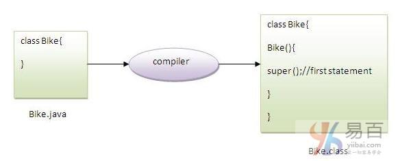

☰ 目录
30 super 关键字
java中的super关键字是一个引用变量，用于引用直接父类对象。
每当创建子类的实例时，父类的实例被隐式创建，由super关键字引用变量引用。
java super关键字的用法如下：
super可以用来引用直接父类的实例变量。【调用被子类同名变量或字段隐藏的 父类变量】super可以用来调用直接父类方法。【调用父类中被子类覆盖掉的同名方法】super()可以用于调用直接父类构造函数。
1. super用于引用直接父类实例变量
可以使用super关键字来访问父类的数据成员或字段。 如果父类和子类具有相同的字段，则使用super来指定为父类数据成员或字段。
class Animal {
String color = "white";
}
class Dog extends Animal {
String color = "black";
void printColor() {
System.out.println(color);// prints color of Dog class
System.out.println(super.color);// prints color of Animal class
}
}
class TestSuper1 {
public static void main(String args[]) {
Dog d = new Dog();
d.printColor();
}
}
执行上面代码，输出结果如下 -
black
white
在上面的例子中，Animal和Dog都有一个共同的属性：color。 如果我们打印color属性，它将默认打印当前类的颜色。 要访问父属性，需要使用super关键字指定。
2. 通过 super 来调用父类方法
super关键字也可以用于调用父类方法。 如果子类包含与父类相同的方法，则应使用super关键字指定父类的方法。 换句话说，如果方法被覆盖就可以使用 super 关键字来指定父类方法。
class Animal {
void eat() {
System.out.println("eating...");
}
}
class Dog extends Animal {
void eat() {
System.out.println("eating bread...");
}
void bark() {
System.out.println("barking...");
}
void work() {
super.eat();
bark();
}
}
class TestSuper2 {
public static void main(String args[]) {
Dog d = new Dog();
d.work();
}
}
执行上面代码，输出结果如下 -
black
white
在上面的例子中，Animal和Dog两个类都有eat()方法，如果要调用Dog类中的eat()方法，它将默认调用Dog类的eat()方法，因为当前类的优先级比父类的高。
所以要调用父类方法，需要使用super关键字指定。
3. 使用 super 来调用父类构造函数
super关键字也可以用于调用父类构造函数。下面来看一个简单的例子：
class Animal {
Animal() {
System.out.println("animal is created");
}
}
class Dog extends Animal {
Dog() {
super();
System.out.println("dog is created");
}
}
class TestSuper3 {
public static void main(String args[]) {
Dog d = new Dog();
}
}
注意：如果没有使用super()或this()，则super()在每个类构造函数中由编译器自动添加。

我们知道，如果没有构造函数，编译器会自动提供默认构造函数。 但是，它还添加了super()作为第一个语句。
下面是super关键字的另一个例子，这里super()由编译器隐式提供。
class Animal {
Animal() {
System.out.println("animal is created");
}
}
class Dog extends Animal {
Dog() {
System.out.println("dog is created");
}
}
class TestSuper4 {
public static void main(String args[]) {
Dog d = new Dog();
}
}
执行上面代码，输出结果如下 -
animal is created
dog is created
super实际使用示例
下面来看看super关键字的实际用法。 在这里，Emp类继承了Person类，所以Person的所有属性都将默认继承到Emp。 要初始化所有的属性，可使用子类的父类构造函数。 这样，我们重用了父类的构造函数。
class Person {
int id;
String name;
Person(int id, String name) {
this.id = id;
this.name = name;
}
}
class Emp extends Person {
float salary;
Emp(int id, String name, float salary) {
super(id, name); // reusing parent constructor
this.salary = salary;
}
void display() {
System.out.println(id + " " + name + " " + salary);
}
}
class TestSuper5 {
public static void main(String[] args) {
Emp e1 = new Emp(1, "ankit", 45000f);
e1.display();
}
}
执行上面代码，输出结果如下 -
1 ankit 45000